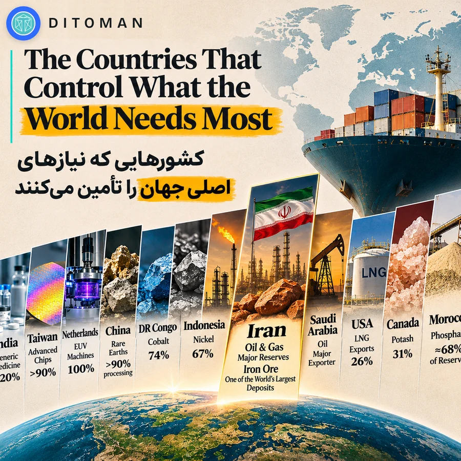
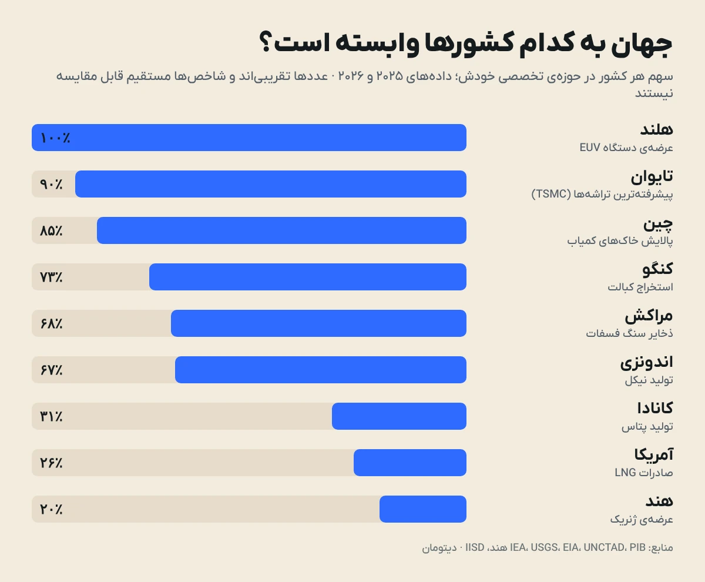

جهان به کدام کشورها وابسته است؟ و ایران کجای این نقشه است
Who the world depends on, and where Iran fits
ده گلوگاه اقتصاد جهان: از کجا به اینجا رسیدند، آینده به آنها چه نیازی دارد و فرصت ایران کجاست
Ten choke points of the world economy: how they got there, what the future needs from them, and where Iran’s opportunity lies
قدرت اقتصادی یک کشور فقط با اندازهی اقتصاد، ذخایر طلا یا حجم صادرات سنجیده نمیشود. گاهی یک کشور چون چیزی را میسازد یا در اختیار دارد که بقیهی دنیا به آن نیاز دارند، جایگاهی پیدا میکند که جایگزین کردنش سالها زمان و میلیاردها دلار میخواهد. از داروهای هند تا تراشههای تایوان، از کبالت کنگو تا فسفات مراکش؛ این گزارش میگوید هر کدام از کجا به اینجا رسیدند، دنیا در آینده برای چه به آنها نیاز دارد، و مهمتر از همه، ایران کجای این نقشه است.
در یک نگاه
- ۱۰ کشور، ۱۰ گلوگاه: دارو، تراشه، ماشین تراشهسازی، پالایش مواد معدنی، کبالت، نیکل، نفت، گاز مایع، پتاس و فسفات
- بیشتر این جایگاهها در ۱۰ تا ۴۰ سال اخیر ساخته شدهاند، نه با شانس زمینشناسی؛ با سیاست صنعتی، دانش و سرمایهگذاری بلندمدت
- آژانس بینالمللی انرژی میگوید تا ۲۰۳۵ جهان حدود ۲۵٪ کسری مس خواهد داشت و تقاضای لیتیوم تا ۲۰۴۰ بیش از ۳۵۰٪ رشد میکند
- ایران: دومین ذخایر گاز جهان، حدود ۵٪ ذخایر شناختهشدهی مس، دهمین تولیدکنندهی فولاد و صنعت داروسازی بزرگ؛ ولی سهمش از بازار جهانی خیلی کمتر از سهمش از منابع است
- پیام اصلی: فاصلهی «داشتن» تا «ساختن» همان فرصت آیندهی ایران است

1. هند؛ داروخانهی جهان
- امروز: سومین صنعت داروسازی جهان از نظر حجم و یازدهمین از نظر ارزش؛ حدود ۲۰٪ عرضهی جهانی داروهای ژنریک
- گذشته تا امروز: صادرات دارو از ۱٫۹ میلیارد دلار در ۲۰۰۰-۲۰۰۱ به ۳۰٫۵ میلیارد دلار در سال مالی ۲۰۲۴-۲۰۲۵ رسید؛ نزدیک ۱۶ برابر
- فراتر از قرص: سازندگان هندی حدود ۶۰٪ واکسنهای یونیسف و ۹۰٪ نیاز سازمان جهانی بهداشت به واکسن سرخک را تأمین میکنند
- بازار: بازار داخلی ۶۰ میلیارد دلاری که پیشبینی میشود تا ۲۰۳۰ به ۱۳۰ میلیارد دلار برسد
داروی ژنریک همان مادهی مؤثر داروی اصلی را دارد و بعد از پایان حق انحصار، ارزانتر ساخته میشود. هند با تربیت نیروی متخصص، کارخانههای تأییدشده برای بازارهای سختگیر و تولید انبوه به اینجا رسید؛ نیمی از صادراتش به آمریکا و اروپا میرود (PIB هند، مارس ۲۰۲۶).
2. تایوان؛ قلب صنعت تراشه
- امروز: TSMC نزدیک ۷۰٪ تراشههایی را که برای دیگران ساخته میشود تولید میکند و سهمش در پیشرفتهترین نسلها حدود ۹۰٪ است
- گذشته: موریس چانگ، مهندس تحصیلکردهی MIT و استنفورد، TSMC را در ۱۹۸۷ با یک ایدهی ساده ساخت: تراشهی دیگران را بسازد، نه طراحی خودش را بفروشد
- آینده: هوش مصنوعی. از گوشی تا مرکز داده، تقاضا برای پیشرفتهترین تراشهها بالا میرود و TSMC تا ۱۶۵ میلیارد دلار برای کارخانههای آریزونا تعهد داده
مزیت تایوان منابع طبیعی نیست؛ دانش مهندسی، تجربهی صنعتی و سرمایهگذاری چنددههای است. سهم دقیق به تعریف «تراشهی پیشرفته» بستگی دارد (MarketScreener، ژوئن ۲۰۲۶).
3. هلند؛ ماشینی که تراشه میسازد
- امروز: شرکت هلندی ASML تنها سازندهی تجاری دستگاههای لیتوگرافی EUV است؛ دستگاههایی که با نور فرابنفش بسیار شدید، مدارهای فوقریز را روی تراشه چاپ میکنند
- اندازه: ASML در ۲۰۲۵ حدود ۳۲٫۷ میلیارد یورو فروش و ۹٫۶ میلیارد یورو سود خالص داشت (eeNews Europe)
- چرا کمرقیب: ساخت این ماشین فیزیک، اپتیک، مکانیک دقیق، الکترونیک و نرمافزار را با هم میخواهد؛ زنجیرهای از صدها تأمینکنندهی تخصصی
هلند نمونهی کشوری است که بدون منابع طبیعی بزرگ، با دانش به جایگاهی رسید که تقریباً هیچ کارخانهی تراشهی پیشرفتهای بدون آن کار نمیکند.
4. چین؛ پالایشگاه مواد معدنی جهان
- امروز: طبق آژانس بینالمللی انرژی، سهم بزرگترین پالایشگر خاکهای کمیاب از بیش از ۹۰٪ در ۲۰۲۳ به ۸۵٪ در ۲۰۲۵ رسیده و با پروژههای تازه ممکن است تا ۲۰۳۵ به ۷۰٪ برسد
- فراتر از خاک کمیاب: چین ۷۸٪ گرافیت طبیعی جهان را تولید میکند و سهمش در ذوب مس از حدود ۱۵٪ به ۵۰٪ رسیده؛ بیش از ۹۰٪ ظرفیت بازیافت مواد باتری هم در چین است
- قدرت: تعداد کدهای تعرفهی مواد معدنیِ زیر کنترل صادرات چین از ۲۰۲۳ سه برابر شده. آژانس بینالمللی انرژی برآورد میکند ۶٫۵ تریلیون دلار تولید سالانهی بیرون از چین به خاکهای کمیاب وابسته است
درس مهم: داشتن معدن با داشتن فناوری فرآوری یکی نیست. ساخت پالایشگاه بیرون از کشور مسلط ۲۰ تا بیش از ۱۵۰٪ گرانتر تمام میشود (IEA، ۲۰۲۶).
5. جمهوری دموکراتیک کنگو؛ سرزمین کبالت
- امروز: حدود ۲۳۰ هزار تن از ۳۱۰ هزار تن کبالت جهان در ۲۰۲۵، یعنی ۷۳٪؛ و نیمی از ذخایر جهان
- سیاست تازه: فوریهی ۲۰۲۵ صادرات کبالت ممنوع شد تا قیمت بالا برود؛ از اکتبر ۲۰۲۵ سهمیهی صادرات گذاشته شد و از ژوئن ۲۰۲۶ صادرات کنسانترهی خام مس و کبالت هم ممنوع شد تا فرآوری در داخل انجام شود
- نتیجه: قیمت کبالت از ژانویهی ۲۰۲۵ تا آوریل ۲۰۲۶ حدود ۱۳۰٪ بالا رفت
کبالت در برخی باتریهای قابلشارژ و آلیاژهای مقاوم در برابر حرارت به کار میرود. فرصت کنگو این است که بهجای فروش خاک، سهم بیشتری از ارزش محصول نهایی را بگیرد (African Exponent بر پایهی USGS).
6. اندونزی؛ از خامفروشی به صنعت نیکل
- گذشته: ممنوعیت صادرات سنگ خام نیکل در ۲۰۱۴ شکست خورد، چون ظرفیت فرآوری نبود. ممنوعیت کامل ژانویهی ۲۰۲۰ موفق شد، چون سرمایهگذاران از قبل ساخت کارخانه را تعهد داده بودند
- تحول: تعداد کارخانههای ذوب از ۲ در ۲۰۱۴ به حدود ۶۰ در ۲۰۲۵ رسید؛ سهم اندونزی از تولید نیکل جهان از ۵۴٪ در ۲۰۲۳ به حدود دوسوم در ۲۰۲۵ رسید
- ارزش: صادرات سنگ خام در اوجش سالی حدود ۱ میلیارد دلار بود؛ صادرات محصولات نیکل در ۲۰۲۵ حدود ۳۴ میلیارد دلار شد
- هزینه: نیروگاههای زغالی کنار کارخانهها از ۲٫۳ گیگاوات در ۲۰۱۴ به ۱۱٫۲ گیگاوات در ۲۰۲۳ رسیدند
اندونزی امروز ۴۳٪ ظرفیت پالایش نیکل جهان را هم دارد (IISD، UNCTAD). این نزدیکترین الگو برای کشوری با معدن و بدون صنعت فرآوری است.
7. عربستان سعودی؛ ستون بازار نفت
- امروز: تولید عربستان در اکتبر ۲۰۲۶ به ۱۰٫۵۶ میلیون بشکه در روز رسید؛ نزدیک سطح ۱۰٫۸۸ میلیون بشکهی پیش از جنگ فوریهی ۲۰۲۶ (الجزیره بر پایهی گزارش اوپک)
- اهمیت: علاوه بر حجم، توان بالا و پایین بردن عرضه (آرامکو میگوید میتواند حداکثر ظرفیت ۱۲ میلیون بشکه را یک سال حفظ کند؛ Zawya)؛ و خط لولهی شرق به غرب که در اختلال تنگهی هرمز نفت را به بندر ینبع در دریای سرخ رساند
نفت هنوز مادهی اولیهی سوخت، پلاستیک، الیاف مصنوعی و محصولات پتروشیمی است.
8. آمریکا؛ بزرگترین صادرکنندهی گاز مایع
- امروز: ۱۵٫۱ میلیارد فوت مکعب در روز در ۲۰۲۵؛ ۲۶٪ صادرات جهانی گاز طبیعی مایع (LNG)، از ۲۱٪ در ۲۰۲۴
- رشد: صادرات آمریکا در ۲۰۲۵ حدود ۲۶٪ بالا رفت؛ بیشترین رشد در جهان
- بازار: تجارت جهانی LNG در ۲۰۲۵ به رکورد ۵۶٫۳ میلیارد فوت مکعب در روز رسید و آمریکا، قطر و استرالیا با هم ۶۳٪ آن را دارند
- آینده: پیشبینی ۱۷٫۴ در ۲۰۲۶ و ۱۸٫۶ در ۲۰۲۷. بستن تنگهی هرمز در ۲۰۲۶ حدود ۲۰٪ عرضهی جهانی LNG را قطع کرد (EIA، ژوئیهی ۲۰۲۶)
فناوری استخراج گاز شیل و ساخت پایانههای صادراتی، آمریکا را در کمتر از یک دهه به صدر این بازار رساند.
9. کانادا؛ کود غذای جهان
- امروز: ۱۵ میلیون تن (معادل اکسید پتاسیم) از ۴۹ میلیون تن پتاس جهان در ۲۰۲۵؛ حدود ۳۱٪
- ذخایر: ۱٫۱ میلیارد تن
- قیمت: میانگین قیمت از اوج ۱۷۹۰ دلار در ۲۰۲۲ به حدود ۱۲۰۰ دلار در ۲۰۲۵ برگشت (USGS، ۲۰۲۶)
پتاس بیشتر برای کود کشاورزی استفاده میشود؛ پس معادن کانادا بخشی از زنجیرهی غذای جهاناند.
10. مراکش؛ ذخایر عظیم فسفات
- ذخایر: حدود ۵۰ میلیارد تن از ۷۳ میلیارد تن ذخایر سنگ فسفات جهان؛ یعنی حدود ۶۸٪
- تولید: ۳۶ میلیون تن از ۲۵۰ میلیون تن در ۲۰۲۵؛ حدود ۱۴٪. بزرگترین تولیدکننده چین با ۱۱۰ میلیون تن است (USGS، ۲۰۲۶)
فسفر برای رشد گیاه ضروری است. ذخیره و تولید دو چیز متفاوتاند؛ مراکش بزرگترین «انبار» است و چین بزرگترین «تولیدکننده».
11. آینده: دنیا برای چه به اینها بیشتر نیاز دارد؟
- تقاضای لیتیوم تا ۲۰۴۰ بیش از ۳۵۰٪ و گرافیت بیش از ۱۳۰٪ رشد میکند (UNCTAD)
- کسری پیشبینیشدهی مس تا ۲۰۳۵ حدود ۲۵٪ است
- نرخ بازیافت مواد معدنی کلیدی میتواند از حدود ۱۰٪ به نزدیک ۲۰٪ تا ۲۰۴۰ برسد
- دنیا دنبال تنوع است: از ۲۰۲۰ نزدیک ۱۰۰ محدودیت صادراتی وضع شده و از ۲۰۲۲ دستکم ۵۸ توافق تازهی همکاری در مواد معدنی امضا شده
- سرمایهگذاری عمومی کشورهای پیشرفته در این حوزه در ۲۰۲۵ به حدود ۶۵ میلیارد دلار رسید؛ بیش از چهار برابر ۲۰۲۳
یعنی جایگاههای امروز همیشگی نیستند. هر جا کمبود و تمرکز هست، جای بازیگر تازه هم هست.
12. ایران کجای این نقشه است؟
ایران از نظر منابع، در چند حوزهی همین فهرست بازیگر بالقوهی بزرگی است؛ ولی سهمش از بازار جهانی خیلی کمتر از سهمش از منابع است.
| حوزه | ایران چه دارد | الگوی جهانی مشابه |
|---|---|---|
| گاز | دومین ذخایر جهان، ۳۴ تریلیون مترمکعب؛ سومین تولیدکننده با ۲۶۳ میلیارد مترمکعب در ۲۰۲۴ | آمریکا و قطر در LNG |
| نفت | حدود ۲۰۹ میلیارد بشکه ذخیره؛ در میان سه تا چهار کشور اول جهان | عربستان |
| مس | حدود ۲٫۶ میلیارد تن ذخیرهی شناساییشده، نزدیک ۵٪ ذخایر شناختهشدهی جهان؛ ولی فقط ۱٫۲٪ تولید کاتد جهان | اندونزی در نیکل |
| روی و سرب | حدود ۱۵ میلیون تن ذخیرهی روی؛ معدن انگوران با ظرفیت حدود ۱ میلیون تن در سال | کنگو و اندونزی در فرآوری داخلی |
| سنگآهن و فولاد | ۳٫۸ میلیارد تن سنگآهن؛ دهمین تولیدکنندهی فولاد جهان با ۳۲ میلیون تن در ۲۰۲۵ | زنجیرهی کامل از معدن تا محصول |
| دارو | مقامهای ایرانی میگویند بیش از ۹۰٪ داروی مصرفی در داخل تولید میشود؛ ولی مواد اولیه و تجهیزات به واردات وابسته است | هند در ژنریک |
| نیروی انسانی | مهندسان و متخصصان در نفت، گاز، معدن، دارو و نرمافزار | تایوان و هلند در دانش |
منابع جدول: مرکز سیاست انرژی دانشگاه کلمبیا، CSIS، S&P Global، worldsteel، Business Today و الجزیره.
گاز؛ بزرگترین فاصله
ایران دومین ذخایر گاز جهان را دارد ولی تقریباً همهاش در داخل مصرف میشود. صادرات به ترکیه و عراق محدود و پرنوسان بوده، حدود ۲۰ میلیارد مترمکعب در سال (نزدیک ۸٪ تولید) سوزانده میشود و ایران هیچ صادرات LNG ندارد. در همان زمان آمریکا در کمتر از ده سال به بزرگترین صادرکنندهی LNG تبدیل شد و قطر از همان میدان مشترکی برداشت میکند که ایران «پارس جنوبی» مینامد.
مس؛ فرصت آینده
اگر کسری ۲۵ درصدی مس تا ۲۰۳۵ درست باشد، کشوری با ۵٪ ذخایر و فقط ۱٫۲٪ تولید کاتد، جای بزرگی برای رشد دارد. تولید کنسانترهی مس ایران از ۷۸۳ هزار تن در ۲۰۱۴ به حدود ۱٫۲ میلیون تن در ۲۰۲۱ رسید؛ قدم بعدی، همان کاری است که اندونزی با نیکل کرد: فرآوری و ساخت محصول در داخل.
سنگآهن و فولاد؛ زنجیرهای که از قبل ساخته شده
ایران حدود ۳٫۸ میلیارد تن ذخیرهی سنگآهن دارد؛ نزدیک ۱٫۹٪ ذخایر شناختهشدهی جهان. تولید کنسانترهی سنگآهن از ۴۹ میلیون تن در ۲۰۱۴ به حدود ۱۰۰ میلیون تن در ۲۰۲۱ رسید (S&P Global) و ایران با ۳۲ میلیون تن فولاد در ۲۰۲۵ دهمین تولیدکنندهی جهان است (worldsteel). بیشتر فولاد ایران با روش احیای مستقیم و کورهی قوس الکتریکی ساخته میشود؛ ظرفیت آهن اسفنجی کشور از ۱۰ میلیون تن در سال بیشتر است. این همان مسیری است که اندونزی با نیکل رفت: از معدن تا محصول، در داخل.
دارو و دانش؛ سرمایهی انسانی
صنعت داروی ایران بیشتر نیاز داخلی را میسازد؛ ولی وابستگی به مواد اولیه و تجهیزات وارداتی و کمبودهای ۲۰۲۶ نشان میدهد زنجیره هنوز کامل نیست. الگوی هند میگوید ژنریک باکیفیت با استانداردهای جهانی میتواند به صادرات بزرگ تبدیل شود.
موانع را هم باید گفت
تحریمها، خاتمهی برجام در اکتبر ۲۰۲۵، جنگ ۲۰۲۶ و اختلال در تنگهی هرمز، سرمایهگذاری و واردات تجهیزات را سخت کرده است. ایران در اوایل ۲۰۲۵ برای کند کردن افت پارس جنوبی ۱۷ میلیارد دلار قرارداد بست، در حالی که برخی برآوردها نیاز را دستکم دو برابر این رقم میدانند.
اگر ایران به دنیا وصل شود
تجربهی همین ده کشور میگوید جایگاهها ساخته میشوند، نه به ارث میرسند. ایران آنچه را بیشتر این کشورها با هزینهی سنگین ساختند، یعنی منابع و نیروی متخصص، از قبل دارد. آنچه کم دارد اتصال، سرمایه و فرآوری است. در سناریوی اتصال دوباره به بازارهای جهانی، سه مسیر از همه روشنترند: گاز برای منطقه و بازار LNG، مس و فلزات با فرآوری داخلی، و دارو و خدمات مهندسی. اینها سناریو و ارزیابی دیتومان است، نه پیشبینی.
سه مسیر ساختن ارزش
- تبدیل مادهی خام به محصول صنعتی و تخصصی؛ مثل اندونزی در نیکل
- سرمایهگذاری بلندمدت در دانش مهندسی و فناوری؛ مثل تایوان و هلند
- تولید رقابتپذیر و اتصال به زنجیرههای جهانی؛ مثل هند و آمریکا
واژهنامهی کوتاه
- داروی ژنریک: دارویی با همان مادهی مؤثر داروی اصلی که بعد از پایان حق انحصار، ارزانتر ساخته میشود
- لیتوگرافی EUV: چاپ مدار روی تراشه با نور فرابنفش بسیار شدید؛ لازمهی ساخت پیشرفتهترین تراشهها
- خاکهای کمیاب: گروهی از ۱۷ عنصر که در آهنرباهای موتور خودروی برقی، توربین بادی و الکترونیک به کار میروند
- LNG: گاز طبیعی که با سرد کردن تا حدود منفی ۱۶۲ درجه مایع میشود تا با کشتی جابهجا شود
- پتاس و فسفات: پایهی دو کود اصلی کشاورزی، پتاسیم و فسفر
- فرآوری یا پالایش: تبدیل سنگ معدن به مادهی خالص و قابلاستفاده در صنعت؛ جایی که بیشترین ارزش ساخته میشود
تحلیل دیتومان
در اقتصاد امروز، ثروتمندترین کشورها لزوماً مهمترینها نیستند. کشوری که چیز سخت و کمیابی را میسازد، نقشی بزرگتر از اندازهی اقتصادش پیدا میکند. هلند ماشین میسازد، تایوان تراشه، هند دارو، و اندونزی در کمتر از ده سال از خامفروشی به صنعت رسید.
ایران روی کاغذ در چند فهرست جهانی جای بالایی دارد: گاز، نفت، مس و فولاد. فاصلهی «داشتن» تا «ساختن» بزرگ است، ولی همین فاصله فرصت نسل بعدی است. دانستن اینکه دنیا به چه نیاز دارد، اولین قدم برای ساختن آن است.
بیشتر بخوانید
منابع
- IEA: Global Critical Minerals Outlook 2026, executive summary
- IEA: Supply concentration, export restrictions and declining investment put critical mineral security at risk
- UNCTAD: Critical minerals are reshaping global trade as demand surges (June 2026)
- USGS: Mineral Commodity Summaries 2026, Potash
- USGS: Mineral Commodity Summaries 2026, Phosphate rock
- EIA: US LNG exports and global LNG trade in 2025 (July 2026)
- PIB India: Indian pharmaceutical industry backgrounder (21 Mar 2026)
- MarketScreener: Why do almost all chips come from Taiwan? (2 Jun 2026)
- eeNews Europe: ASML reports €32.7bn sales, €9.6bn net income for 2025
- African Exponent: DR Congo mined 73% of the world's cobalt in 2025 (USGS data)
- IISD: Indonesia's nickel downstreaming as green industrial policy
- Al Jazeera: Oil production near pre-Iran war levels, OPEC says (11 Nov 2026)
- Columbia CGEP: Iran's natural gas paradox (26 Jan 2026)
- CSIS: G7 critical minerals ambitions and Iran's natural resources
- S&P Global: Iran's metals industry expansion driven by sizable mineral reserves (20 Jun 2025)
- worldsteel: World Steel in Figures 2026
- Business Today: 209 billion barrels, Iran's oil reserves (28 Feb 2026)
- Zawya: Saudi Aramco can sustain 12 mln bpd maximum oil capacity for a year
- Al Jazeera: Medicine shortages grow in Iran (9 Sep 2026)
آخرین بازبینی: ۵ آذر ۱۴۰۵. عددها از گزارشهای آژانس بینالمللی انرژی، USGS، EIA، UNCTAD، دولت هند و منابع ذکرشده بررسی شد. شاخصهای کشورها متفاوتاند و مستقیم قابل مقایسه نیستند. انحصار EUV شرکت ASML و رقم ۲۰٪ ژنریک هند از گزارشهای ثانویه و رسمی آمده؛ رقم ۹۰٪ داروی داخلی ایران ادعای مقامهای ایرانی است. بخش سناریوهای ایران ارزیابی دیتومان است، نه پیشبینی.